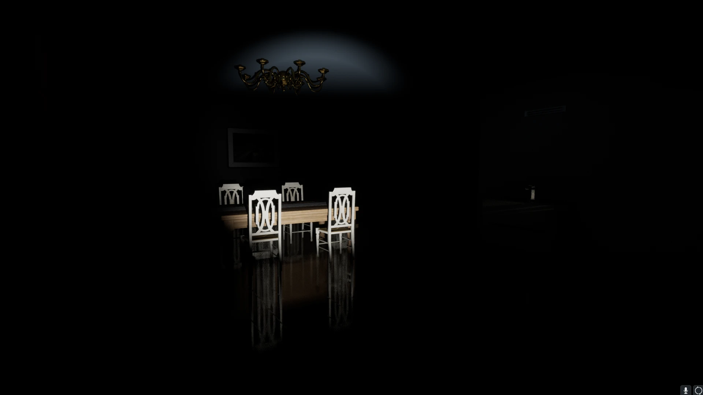
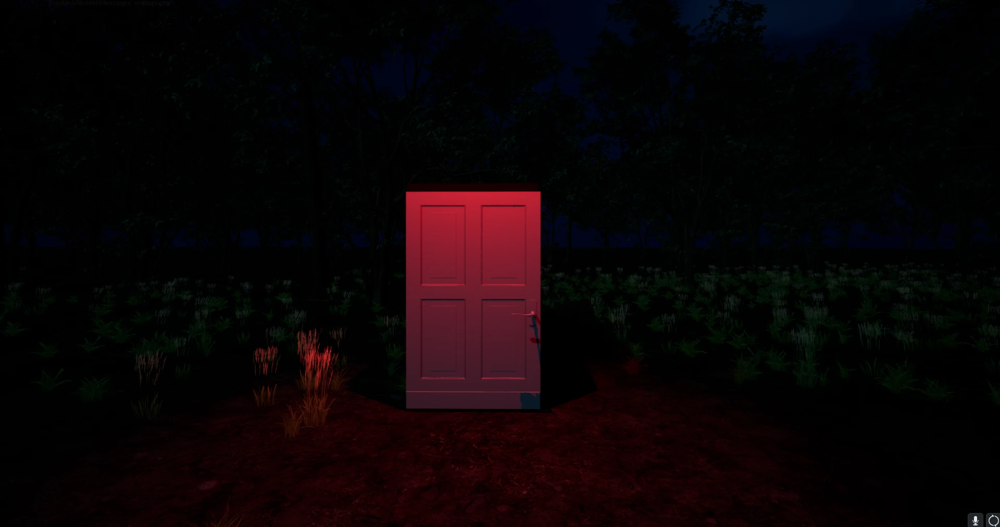
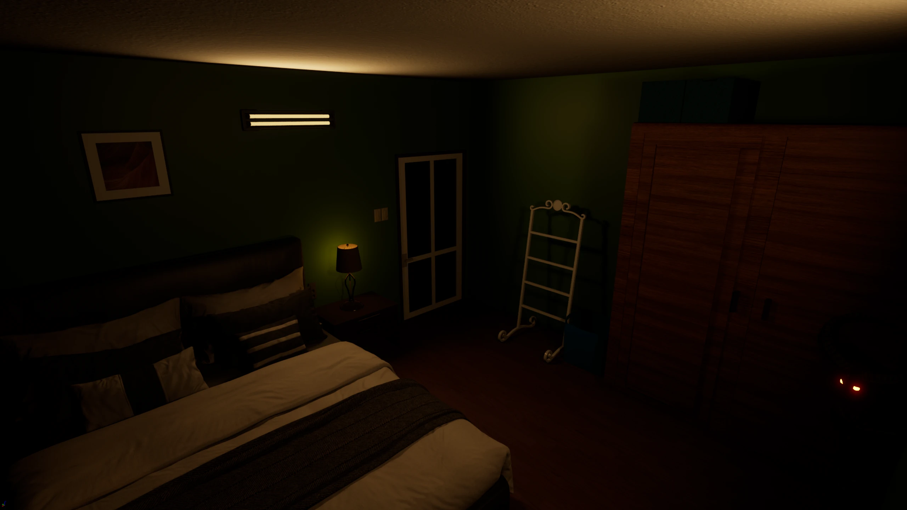
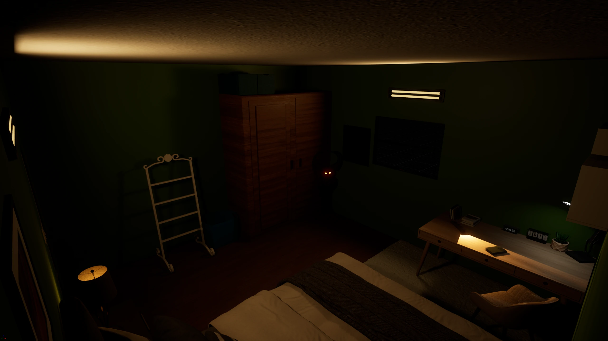
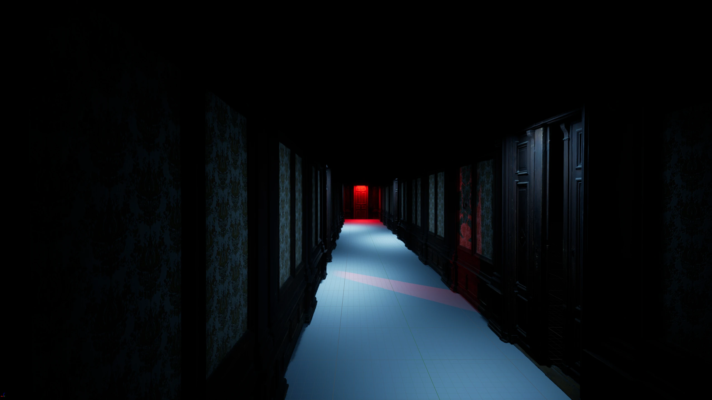

A mind at war with itself.
Deep Into Dreams is a first-person psychological horror game built in Unreal Engine. The player inhabits the fractured inner world of a protagonist whose mind has become a labyrinth — each level a deeper descent into a nightmare that reflects their psychological trauma.
The design philosophy centres on environmental storytelling: the world itself tells the story. Clues are embedded in architecture, lighting, and object placement. No HUD, no exposition dumps — the player must read the space to understand what happened and what's at stake.
"Horror isn't what you see. It's the gap between what you expect and what you find."
The cast of the unconscious.
Each character in the game is a psychological projection — a fragment of the protagonist's psyche given form. Their dialogue and behaviour shift depending on how far the player has progressed.
What every room had to feel.
- No HUD, no handholding. All information lives in the environment — a flickering light means danger, a static painting means you've been here before.
- Sound as a narrative layer. Each room has a soundscape that deteriorates as the horror escalates — music box, then static, then silence.
- Tension through pacing, not jump scares. Slow-building dread is sustained by environmental inconsistencies the player gradually notices.
- Puzzle-as-memory. Every puzzle is a repressed memory. Solving it means confronting what happened — which unlocks the next area.
- Reward curiosity. Players who examine every detail find lore fragments that reshape their understanding of everything that came before.
How the nightmare was built.
Built with.
Environments & Documents.



